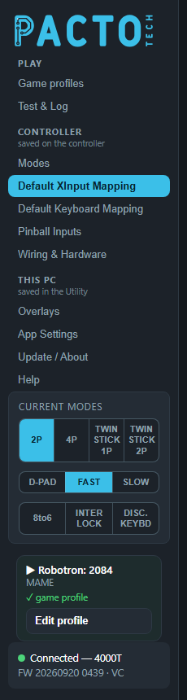

Pacto Tech Utility guide
Everything the Pacto Tech Utility can do, page by page, with screenshots. The Utility is the Windows app that configures your Pacto Tech controller board, shows mode banners on screen, tests your controls and keeps the firmware up to date.
Want the board to switch modes by itself for each game? Start with Game profiles, the page the Utility opens on. The Utility sees which game or front end is running and sets 2 player / 4 player / twinstick, stick output, 8-to-6, turbo, button remaps or keyboard mode automatically, then puts everything back when the game ends. No scripts needed.

How the Utility is organised

The sidebar on the left groups the pages by where their settings are kept:
- Play: Game profiles and Test & Log, the pages you use most once the cabinet is set up.
- Controller (saved on the controller): Modes, Default XInput Mapping, Default Keyboard Mapping, Pinball Inputs and Wiring & Hardware. These settings are stored in the board itself, so they go with it to any PC. Changes wait on the page until you press Save to controller at the bottom, and the Utility asks about unsaved changes before you leave. These pages need the controller plugged in.
- This PC (saved in the Utility): Overlays, App Settings, Update / About and Help. These settings apply as soon as you change them. There is no Save button.
Game profiles are stored on this PC too. They change the controller only while a game runs and never touch what is saved on the controller.
Below the pages, the sidebar shows the Current modes buttons, the game that is playing (with the profile that was applied) and, at the bottom, the connection box with your board model and firmware. The App Settings page describes each box.
Help, the last page in the sidebar, has short searchable topics inside the Utility itself.
Play
Controller saved on the controller
This PC saved in the Utility
More
- Change modes with scripts — batch files, front ends, PowerShell, Python, AutoHotkey, Linux.
- Release notes — what changed in each version.
- Downloads — the Utility installer, firmware and the stand-alone Control Test.
Screenshots show the Utility with example settings; your board, games and history will differ.